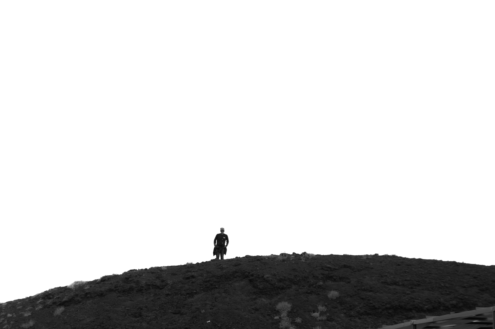
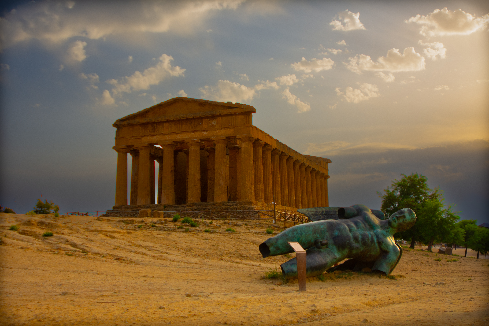
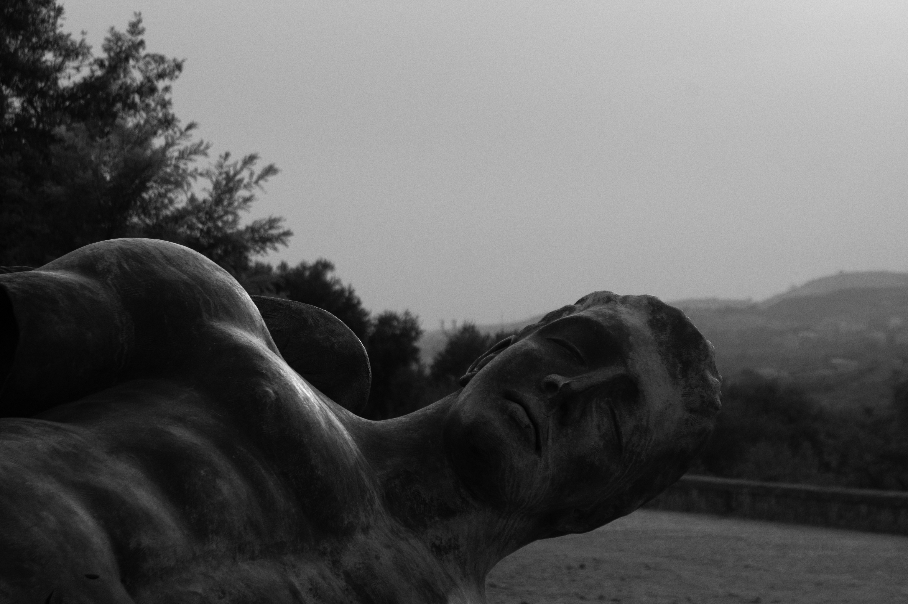
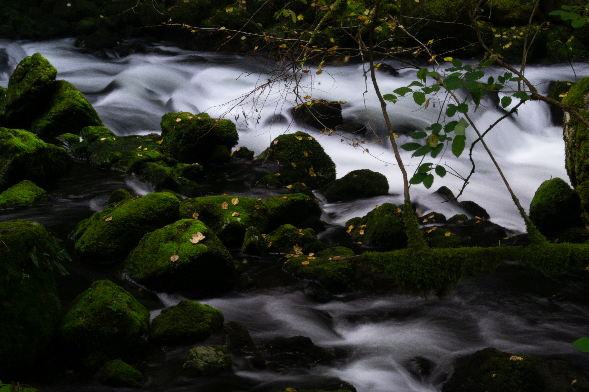

01 Valle dei Templi
Der Schlucht der Antiken und die Tempel der Eintracht in Agrigent, Sizilien.




02 Hölen von Vallorbe
Die Hölen von Vallorbe in der Schweiz, die sich in den Bergen und Tälern bewegen.
